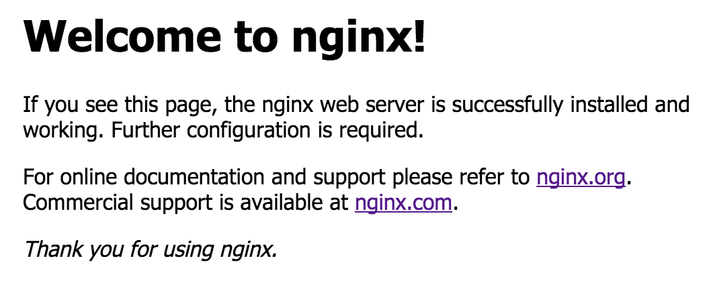

Building a multi-node IPv6-enabled bare-metal kubernetes cluster with microk8s, metallb, longhorn and VyOS
Posted on Wed 28 June 2023 in Guides
Motivation
Through some changes in my job, i first came into contact with kubernetes ~1 year ago. In this time i learned a lot, however my learning process was always somehow limited by me only having access to clusters from my company, which, of course, werent very tolerant to "some noob just fooling around".
I always wanted to operate a cluster myself to really understand whats going on under the hood. The usual cloud providers are very happy to provide you with one, for the small price of ~50$ for one controlplane node and no worker nodes. Obviously this is a bit too expensive to justify for a little hobby project.
This was the moment i decided to try building a bare-metal cluster, as, in theory, this would be a lot cheaper as you can just use off-the-shelf hosted servers, which are a lot cheaper per compute power in comparison. One small issue though: Due to the way kubernetes provisions workloads, you wont be able to just pull up a cluster and expect everything to work right away.
Some examples for things which arent as easy as they seem:
Networking
Kubernetes assigns pods and containers IP addresses like you would expect, however the old idea of "one computer gets one ip address and thats it" is far from the reality in kubernetes. Most of the time, Network Ingress is controlled via, you guessed it, the Ingress resource. Combined with LoadBalancers, kubernetes provides a robust way of how the outside can interact with your services. Heavily simplified it works roughly like this:
- A Deployment requests that it wants to receive outside traffic
- The cluster provisions a LoadBalancer, and an IP with it and directs traffic it receives there to the services
In cloud environments like AWS and Google Cloud (EKS and GKE), the cluster actually provisions a resource in the cloud (Often also called a loadbalancer), which you will be billed for. This means, the outside will never directly communicate with your clusters network interfaces, but rather via this little detour.
Now, for bare-metal deployments, someone, or rather, something has to be the entity providing these loadbalancers, as this is not included in any core kubernetes components. Some time ago, MetalLB was created for this. MetalLB functions as the provider for LoadBalancers and basically passes out IP Adresses from different Pools and announces them either via BGP or L2 (ARP in the case of v4).
Storage
For Storage, the story is roughly the same. Kubernetes has, by design, a different approach to storage, as most applications are meant to be stateless and therefore dont need any persistent Storage. This is of course different for things like databases and so on, most of the time is generally a bad idea to deploy those in kubernetes though. There will however be occasions in which you need persistent storage which survives after a container is killed or deleted. For this, kubernetes has PersistentVolumes.
In most cloud environments, the cloud provider will provision such volumes in the cloud environment itself. As we have none of that in bare-metal deployments, we need something else: Longhorn is a tool which provides persistent volume functionality by storing data on the nodes themselves. We will use longhorn to provide storage for our bare-metal cluster.
Basic ideas and concepts of the Deployment

The cluster will consist of 3 nodes (this number is abritrary, you can either use just one node, or any other number, for better high availibility performance, this number should however be odd). Each of these nodes is a virtual machine on one hypervisor (in my case proxmox, this shouldnt matter though). Additionaly we need a router speaking BGP, to which we can later anounce adresses of our cluster. In theory this router doesnt have to be controlled by you (e.g. talking directly to your ISP), but the bgp advertisements will get as small as /32 for v4 and /128 for v6, which any reasonable ISP would reject. Additionally we will establish a BGP peering between each node and the router, another fact which most ISPs will (rightfuly so) reject. This is why i chose to deploy a VyOS router along with the nodes, to which they can talk via BGP. This router will then "reanounce" the received routes via OSPF to my ISP (which in my case is me).
TL;DR Prerequisites
- Some Machines (or VMs) acting as nodes, running ubuntu
- BGP-enabled router or an additional VM to deploy a software router like VyOS
- An IP prefix you own or you are allowed to anounce (i will only use v6 here)
- An upstream router to which you can anounce your prefix, which preferably has some sort of transit peering, so your prefix actually gets anounced to the internet
Setting up the actual cluster
Now to the more interesting part of this article: Actually Setting the cluster up.
Setting up the nodes
Setting up the nodes is pretty straight forward for now. Just install microk8s via snap. Execute these commands on all of your nodes:
sudo snap install microk8s --classic
Then just wait until microk8s is ready:
microk8s status --wait-ready
Now, decide on one of the nodes to be the master node, which will host the control plane. As microk8s doesnt support IPv6 out of the box, we will have to adjust some things on this node, which will later get propagated to the other nodes.
Enabling IPv6 on the cluster-internal ip spaces
You only need to execute these commands on your master node.
sudo patch /var/snap/microk8s/current/args/kube-proxy << EOF
2c2,3
< --cluster-cidr=10.1.0.0/16
---
> --cluster-cidr=10.1.0.0/16,fd01::/64
>
EOF
sudo patch /var/snap/microk8s/current/args/kube-apiserver << EOF
2c2
< --service-cluster-ip-range=10.152.183.0/24
---
> --service-cluster-ip-range=10.152.183.0/24,fd98::/108
>
EOF
sudo patch /var/snap/microk8s/current/args/kube-controller-manager << EOF
7a8,11
> --service-cluster-ip-range=10.152.183.0/24,fd98::/108
> --cluster-cidr=10.1.0.0/16,fd01::/64
>
EOF
Enabling IPv6 for calico
microk8s uses calico as its CNI, so we have to adjust the calico configuration so that it actually assigns v6 addresses to our pods and services. This involves both the calico 'master' service, as well as the calico node service.
cat << EOF > calico-config.patch
data:
cni_network_config: |-
{
"name": "k8s-pod-network",
"cniVersion": "0.3.1",
"plugins": [
{
"type": "calico",
"log_level": "info",
"datastore_type": "kubernetes",
"nodename_file_optional": true,
"nodename": "__KUBERNETES_NODE_NAME__",
"mtu": __CNI_MTU__,
"ipam": {
"type": "calico-ipam",
"assign_ipv4": "true",
"assign_ipv6": "true"
},
"policy": {
"type": "k8s"
},
"kubernetes": {
"kubeconfig": "__KUBECONFIG_FILEPATH__"
}
},
{
"type": "portmap",
"snat": true,
"capabilities": {"portMappings": true}
},
{
"type": "bandwidth",
"capabilities": {"bandwidth": true}
}
]
}
typha_service_name: none
veth_mtu: "1440"
EOF
kubectl patch -n kube-system configmaps/calico-config --patch-file=calico-config.patch
cat << EOF > calico-node.patch
spec:
template:
spec:
containers:
- env:
- name: IP6
value: autodetect
- name: IP6_AUTODETECTION_METHOD
value: can-reach=www.google.com
- name: CALICO_IPV6POOL_CIDR
value: fd01::/64
- name: FELIX_IPV6SUPPORT
value: "true"
name: calico-node
EOF
kubectl patch -n kube-system daemonset/calico-node --patch-file=calico-node.patch
Installing calicoctl
To add our configured v6 address pool to calico, we have to install calicoctl in our cluster. The version of calicoctl has to match the version of calico installed in your cluster. At the time of writing this post, the version shipped with microk8s is 3.25.0. In case yours differs, just adjust the url accordingly:
kubectl apply -f https://raw.githubusercontent.com/projectcalico/calico/v3.25.0/manifests/calicoctl.yaml
Adding the IP pool to calico
Now we can tell calico which IPs to hand out to resources in our cluster:
kubectl exec -i -n kube-system calicoctl -- /calicoctl replace -f - << EOF
apiVersion: projectcalico.org/v3
kind: IPPool
metadata:
name: default-ipv6-ippool
spec:
blockSize: 122
cidr: fd01::/64
ipipMode: Never
nodeSelector: all()
vxlanMode: Never
natOutgoing: true
EOF
And thats it, the networking part is done! Now we just have to restart microk8s:
microk8s stop
microk8s start
Joining the nodes into a cluster
Now we can finally join the nodes together to form a cluster. To do this, we have to create a token from our master node:
microk8s add-node
This will produce the following output:
From the node you wish to join to this cluster, run the following:
microk8s join 192.168.1.230:25000/92b2db237428470dc4fcfc4ebbd9dc81/2c0cb3284b05
Use the '--worker' flag to join a node as a worker not running the control plane, eg:
microk8s join 192.168.1.230:25000/92b2db237428470dc4fcfc4ebbd9dc81/2c0cb3284b05 --worker
If the node you are adding is not reachable through the default interface you can use one of the following:
microk8s join 192.168.1.230:25000/92b2db237428470dc4fcfc4ebbd9dc81/2c0cb3284b05
microk8s join 10.23.209.1:25000/92b2db237428470dc4fcfc4ebbd9dc81/2c0cb3284b05
microk8s join 172.17.0.1:25000/92b2db237428470dc4fcfc4ebbd9dc81/2c0cb3284b05
Just execute one of the commands on your worker node, to join it into the cluster. Note that you have to execute the add-node command once for every node you want to join.
⚠️ Pitfall: If your master node cant resolve the worker nodes hostnames to their respective IPs (e.g. because you dont have a dns server in your network), the joining wont work properly. To combat this, you can either add a dns server in your network, or just add the nodes as a static entry in /etc/hosts on the master node.
Adding the DNS server component to microk8s
The final step to setting up our nodes is adding the dns server component to microk8s:
microk8s enable dashboard dns
Once again, this command only has to be executed on the master node. The worker nodes will inherit all config changes.
Installing MetalLB
As you can see from microk8s status, microk8s already includes metallb as an addon. However we wont be able to use this, as the default MetalLB configuration will use its own BGP daemon, which doesnt support IPv6. Hence we need to use the frr-mode, which, as the name suggests, uses frr as its bgp daemon. Until this option is included in the official plugin, we have to add it as a custom addon repository:
After that we can just enable it:
microk8s enable metallb-frr
You will be prompted for a IP prefix, which will be the default Adresspool for Metallb. Just input any random prefix, we wont be using it. Now Metallb should be successfully installed. Until we can use this though, we first have to set up our router correctly.
⚠️ There is currently a bug in metallb which sometimes messes up the cert configuration for the webhooks metallb provides so that kubernetes can validate the custom resources. The issue is documented here. If this applies to you, i would recommend setting failurePolicy=Ignore like it is suggested there in your metallb deployment. This requires modifying the microk8s addon.
Setting up our VyOS router
(Skip this part if you already have a BGP enabled router in your network and know how to configure it)
As every configuration is different, i will only go into detail on how to setup the peerings to the kubernetes nodes. At the end of this post, all prefixes anounced from kubernetes will be in the routing table of this VyOS router, but you still have to redistribute them to your ISP.
At this point, you should have a vyos router up and running which is in the same network as your nodes.
To establish peering sessions to our nodes, we first have to configure the system-ASN. If you have an ASN, configure it accordingly, otherwise use a random ASN fromt the Private ASN range (RFC6996).
set protocols bgp system-as 'your-asn'
set protocols bgp parameters router-id '10.0.0.1'
Then we can add a peering for each node (adjust the ip accordingly for each node):
set protocols bgp neighbor 10.0.0.2 address-family ipv6-unicast
set protocols bgp neighbor 10.0.0.2 description 'metallb-node-01'
set protocols bgp neighbor 10.0.0.2 remote-as '213127'
As expected, the sessions wont come up just yet, as we dont have the peerings configured on the nodes themselves.
Configuring MetalLB
To configure MetalLB, we essentially need three things:
- An Adresspool
- A BGPPeer
- An Anouncement
The Adress Space
First we need to configure an adresspool from which MetalLB will hand out adresses. We do this by defining a resource for the CRD IPAddressPool:
pool.yaml
apiVersion: metallb.io/v1beta1
kind: IPAddressPool
metadata:
name: default-pool
namespace: metallb-system
spec:
addresses:
- your:prefix::/64
I have used an adress space from my prefix, you will obviously have to adjust the prefix accordingly.
Save the file under a name of your choice and apply it with
kubectl apply -f pool.yaml
The BGPPeer
For the Peering with our VyOS router, we also define a custom resource:
peer.yaml
apiVersion: metallb.io/v1beta2
kind: BGPPeer
metadata:
name: vyos-gw
namespace: metallb-system
spec:
myASN: your-asn
peerASN: your-asn
peerAddress: 10.0.0.1
Once again, adjust the ASN and the address of your router and apply it with
kubectl apply -f peer.yaml
The advertisement
Metallb wont anounce any prefixes until you have defined a BGPAdvertisement resource. We dont need to actually configure anything in it, so you can leave it as is.
advertisement.yaml
apiVersion: metallb.io/v1beta1
kind: BGPAdvertisement
metadata:
name: default-advertisement
namespace: metallb-system
And one last time, apply this with
kubectl apply -f advertisement.yaml
Now MetalLB should be configured correctly and ready to go.
Deploying our first resource
To test our new cluster, we can deploy a very simple nginx application:
nginx.yaml
kind: Service
apiVersion: v1
metadata:
name: nginx
labels:
app: nginx
annotations:
metallb.universe.tf/address-pool: default-pool
spec:
ipFamilyPolicy: SingleStack
ipFamilies:
- IPv6
selector:
app: nginx
ports:
- port: 80
protocol: TCP
targetPort: 80
type: LoadBalancer
---
apiVersion: apps/v1
kind: Deployment
metadata:
name: nginx
labels:
app: nginx
spec:
replicas: 1
selector:
matchLabels:
app: nginx
template:
metadata:
labels:
app: nginx
spec:
containers:
- name: nginx
image: nginx:latest
imagePullPolicy: Always
ports:
- containerPort: 80
protocol: TCP
Take a look at
annotations.metallb.universe.tf/adress-pool: default-poolHere we tell metallb from which pool it should choose an address for this service. The pool is the one we configured earlierspec.ipFamilyPolicy: SingleStackwe strictly want IPv6-only
Deploy the application with
kubectl apply -f nginx.yaml
Now we can check if our service got an address:
kubectl get svc/nginx -n default
NAME TYPE CLUSTER-IP EXTERNAL-IP PORT(S) AGE
nginx LoadBalancer fd98::1163 2a0e:8f02:f000:2:: 80:30544/TCP 25s
If your BGP configuration is setup probably, the address under EXTERNAL-IPshould be publicly reachable. Lets check:

Yay \o/ seems like its working.
Continuing from here
We now have a working kubernetes cluster in which we can deploy our workloads. One part is however still missing: Storage. For this i would recommend to install longhorn, which provides everythin necessary for your kubernetes cluster storage-wise.
Troubleshooting
If your service isnt reachable, try to narrow down the source:
Is the address getting anounced to your router?
First, check if the anuoncement is actually made from the metallb-speaker components. In the case of VyOS, you can check the received anouncements with
show bgp summary
The number of prefixes received should match your expectation.
Is the internal frr daemon anouncing the prefixes?
Sometimes it might be worth to check if metallb actually generated the frr configuration correctly. To do this, first check the name of the speaker pods:
kubectl get all -n metallb-system
NAME READY STATUS
pod/speaker-lrp92 4/4 Running
pod/controller-7bfbddb7f6-vtrrb 1/1 Running
pod/speaker-d2g4m 4/4 Running
Then, choose one of the speaker pods, and get a shell into the frr container:
kubectl exec --stdin --tty -n metallb-system -c frr speaker-d2g4m -- /bin/sh
Now, you can directly interact with frr by using the vtysh command. Refer to the documentation for more information about it.
Further things to check
- Did the assignment work (can you see an
EXTERNAL-IPfor the service)?- If not, check the logs of the metallb
controllercomponent for errors
- If not, check the logs of the metallb
- Can you reach the service via ther
INTERNAL-IP- If not, the issue is probably not with metallb, but rather with the CNI or the service itself
- Did the pods associated with the service receive an IPv6 address? (check with
kubectl describe pod/foo)- If not, the CNI is probably improperly configured
Thanks
Many thanks to the reudnetz w.V. for providing me with the infrastructure for this project.